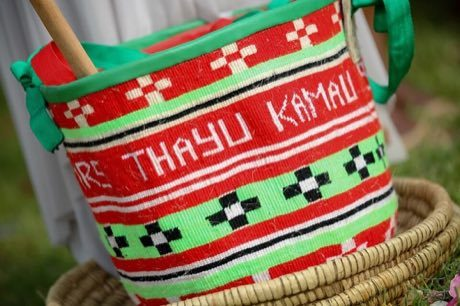
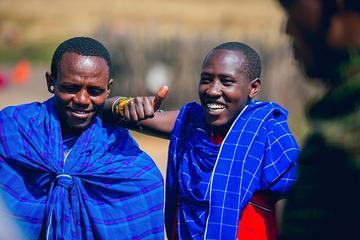

Home / Living Traditions / Africa: Great Lakes and Indian Ocean
Playable heritage gameKiondo basket weaving
Also known as Kiondo
The kiondo is a bag of hand-twisted plant twine, most often sisal, finished with a leather strap, made by Kikuyu, Kamba and Taita women in Kenya. It is twined rather than coiled: pairs of strands twist round each other row after row, and bands of dyed twine make stripes and diamonds.


How to play
- The lit case above the bench shows the kiondo as it should finish. Look at how its pattern climbs the curve.
- Choose a strand colour below the basket, then lay each stitch across the front of the ring. The gold ring marks the next place and the strip under the basket shows the row in hand.
- Work up from the base, one ring at a time, so each ring lines up with the bands in the case.
- Press Check when every stitch is laid. Undo takes the last stitch back.
Rules at a glance
- The bag is built from 9 rings of 13 stitches, laid from the base upward, one ring at a time. The leather strap is already fitted.
- Each stitch takes one of four twine colours: natural sisal, indigo, red or gold.
- The score is the share of stitches whose colour matches the pattern, counted beyond what laying only the commonest colour would earn. Three stars need 88, two need 65 and one needs 40.
- Undo takes back the last stitch. A bag left plain earns no stars.
About the tradition
Kiondo are made by women of the Kikuyu, Kamba and Taita communities, who spin the twine by hand, dye part of it, and twine it into the bag before adding leather trim. Women's groups sell them in markets today, and the colour bands often follow family or regional tastes.
Origins
A living tradition passed from person to person; it is not tied to a single dated origin. It belongs to the cultural world of Africa: Great Lakes and Indian Ocean.
Credits
- Photo: Antony Trivet, CC BY-SA 4.0, source on Wikimedia Commons
- Text: CC BY-SA 4.0, World Heritage Games.
Sources

Get the app
Kiondo basket weaving is one of 6 basketry crafts in the Basketry & Straw of the World app for Android. Live on Google Play. One app, many traditions, no account needed.
More games to play


Adire indigo resist dyeing
Nigeria · Crafts and makingPlay preview · in the Textile Crafts of the World app
Agaseke basket weaving
Rwanda · Crafts and makingPlay preview · in the Basketry & Straw of the World app

Mesob basket weaving
Ethiopia · Crafts and makingPlay preview · in the Basketry & Straw of the World app
Celtic knot weave
Ireland +1 · Crafts and makingPlay preview · in the Textile Crafts of the World app
More from Kenya

Kanga cloth design
Kenya · Crafts and making
Kati
Kenya +1 · Street and playground games
Kitendawili
Kenya · Puzzles and mind games